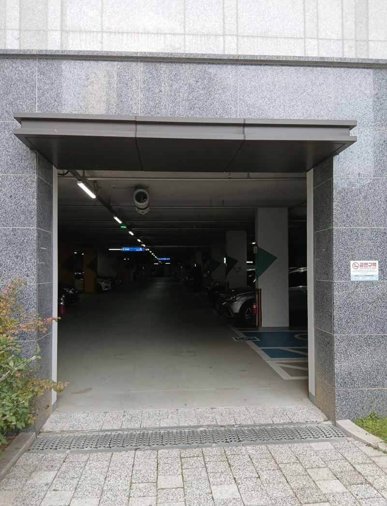
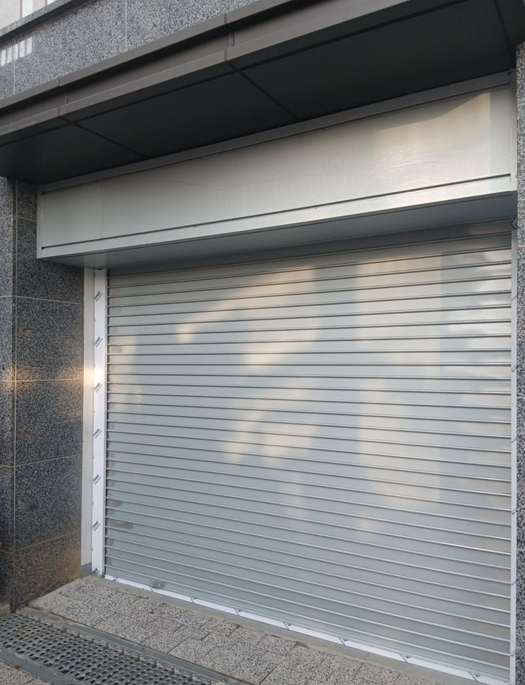
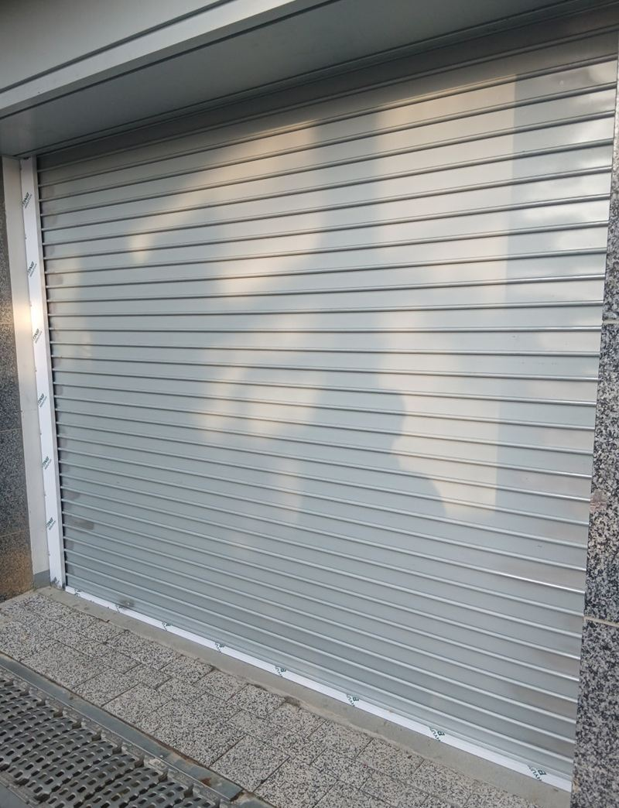
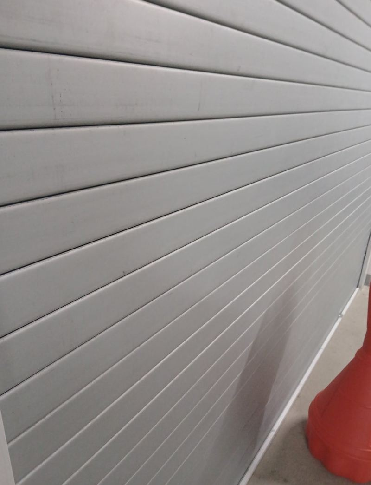
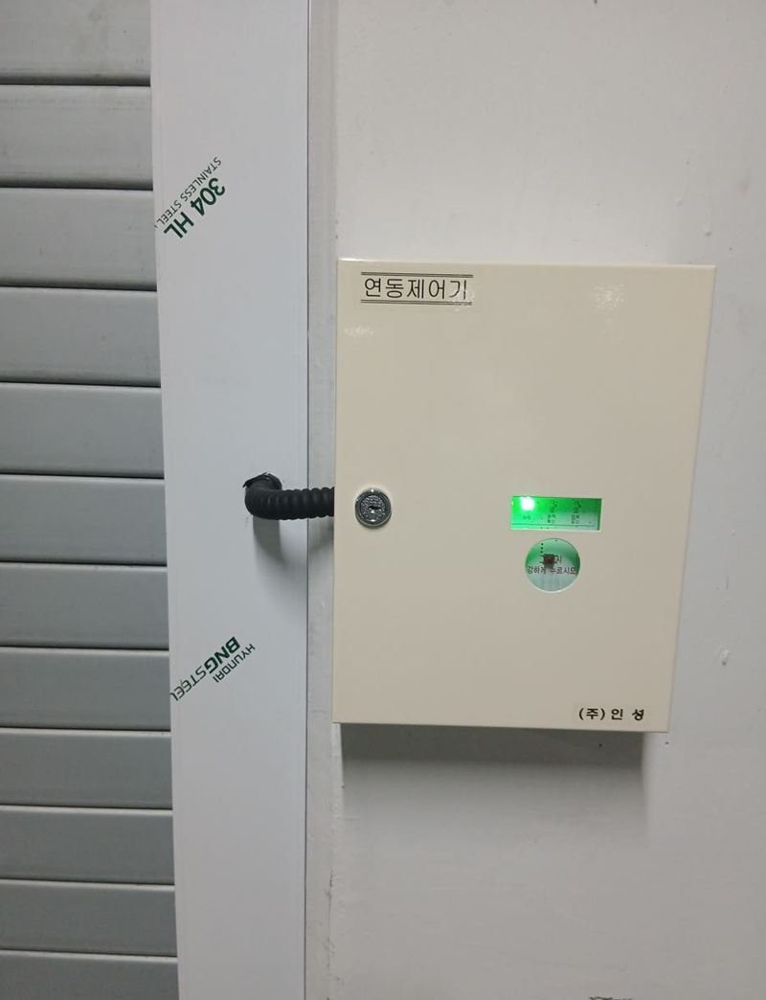
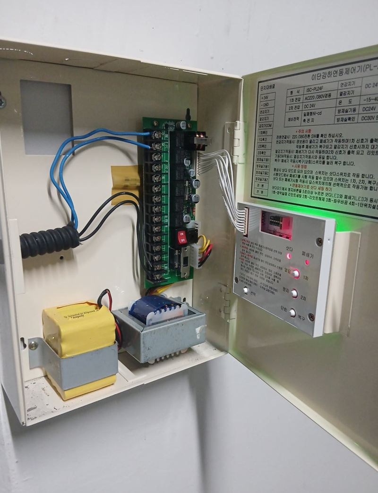

평택 수동·자동 셔터문 종류와 설치 비용
← 밀어서 전후 비교 →
"주차장 보조 출입구로 찬바람이 너무 많이 들어와요." 평택 고덕동 아파트 관리 쪽 문의였어요. 거의 쓰지 않는 출입구인데 밖과 바로 이어져 있어, 겨울이면 한기가 그대로 주차장 안까지 들어왔어요. 필요할 때만 열 수 있고, 바람을 막고, 버튼 하나로 여닫히길 원하셨어요. 셔터 종류를 비교해 이중바 자동 셔터로 정하고, 벽체와 상부를 확인한 뒤 박스·레일·모터를 달고 스위치로 연결했어요.
| 현장 | 평택 고덕동 아파트 지하주차장 보조 출입구 |
|---|---|
| 요청 | 외풍 차단, 기본 방범, 버튼으로 자동 개폐 |
| 한 일 | 전기 배선·벽체 강도·상부 확인 → 실측 → 셔터 박스·모터 결합 → 레일 수평 설치 → 스위치 연결 → 작동·안전센서 확인 → 하단 틈 점검 |
| 선택 | 이중바 셔터, 스위치형 개폐 |
셔터 종류, 이렇게 달라요
| 종류 | 좋은 점 | 아쉬운 점 |
|---|---|---|
| 수동 셔터 | 설치비가 낮고 관리가 쉬움 | 크면 올리고 내리기 힘듦 |
| 자동 셔터 | 버튼으로 빠르게 개폐 | 전기 연결이 꼭 필요 |
| 이중바 셔터 | 두 겹 구조로 바람·충격·방범에 강함 | 일반형보다 비쌈 |
| 단열 셔터 | 냉기·소음 차단 | 모터 힘이 조금 더 필요 |
이 현장처럼 찬바람을 막고, 튼튼하고, 쓰기 편해야 한다면 이중바 자동 셔터가 균형이 좋아요. 종류별 차이를 설명드리고 충분히 상의한 뒤 정하셨어요.


셔터 설치 순서
설치 가능 여부 확인
셔터는 무거워서 문틀에만 거는 걸로는 부족해요. 박스·레일·모터 무게를 벽과 상부가 버티는지, 전기를 끌어올 수 있는지 먼저 봤어요.
실측
폭과 높이, 모터 들어갈 자리를 정확히 쟀어요. 이중바는 바를 조립하고 상부 박스를 만들어야 해서 치수가 어긋나면 셔터가 내려오지 않거나 레일이 틀어져요.
박스·모터·레일
미리 조립한 셔터에 상부 박스와 모터를 결합해 두 사람이 받치며 수평을 맞췄어요. 레일이 비틀리면 중간에서 멈추니 레이저 수평기로 잡았어요.


스위치 연결과 시험
스위치형과 리모컨형 중 스위치형으로 연결하고, 오르내리는 속도, 모터 소리, 안전센서까지 여러 번 확인했어요.


마지막으로 셔터가 바닥에 닿을 때 단차가 없는지, 양옆 틈으로 바람이 들지 않는지 다시 봤어요. 포장재는 모두 수거했어요. 관리 쪽에서는 "겨울 대비 제대로 막을 수 있게 됐다"며 만족하셨어요.
셔터 설치 비용이 달라지는 것
- 크기폭과 높이가 클수록 바 수와 모터 용량이 늘어요.
- 종류일반, 이중바, 단열 중 무엇인지에 따라 자재가 달라요.
- 개폐 방식수동인지, 스위치·리모컨 자동인지에 따라 전기 작업이 생겨요.
- 보강상부나 벽이 약하면 받침을 더 대야 해요.
셔터 오래 쓰려면
셔터는 자주 안 쓰는 출입구일수록 오히려 관리가 소홀해져요. 레일에 낙엽과 먼지가 쌓이면 바가 걸려 모터에 무리가 가고, 하단 고무가 닳으면 바람이 다시 새요. 한 달에 한 번쯤 끝까지 올렸다 내려 보며 소리와 걸림을 확인해 주세요.
겨울에는 하단이 바닥에 얼어붙어 모터가 헛돌 수 있어요. 눈이나 물이 고이는 출입구라면 하단 주변을 한 번 쓸어 주는 것만으로도 고장을 줄일 수 있어요. 이상한 소리가 나기 시작하면 억지로 계속 쓰지 말고 점검을 받는 게 좋아요.
셔터문 질문
상가 앞 셔터도 하나요?
상가, 창고, 공장, 주차장 출입구 셔터 모두 해요.
정전되면 셔터를 못 여나요?
수동으로 올릴 수 있는 장치가 있는 제품이 많아요. 설치 때 방법을 알려 드려요.
리모컨으로 바꿀 수 있나요?
모터와 제어함이 지원하면 리모컨을 추가할 수 있어요.
셔터에서 소리가 커요.
레일이 휘었거나 바가 어긋난 경우가 많아요. 레일 상태부터 봐요.
전기 공사가 꼭 필요한가요?
자동 셔터는 전원이 있어야 해요. 가까운 곳에 전원이 있는지 확인해요.
유리문 앞에 셔터를 달 수 있나요?
유리문 바깥쪽에 셔터를 달아 영업 후 함께 닫는 경우가 많아요.
바닥이 기울어 있어요.
셔터 하단이 뜨지 않게 바닥 높이를 보고 맞춰요.
다른 유리문·셔터 현장
출입구 정면과 위쪽, 가까운 전원 위치를 찍어 보내 주세요.
전화 상담 010-4517-9872